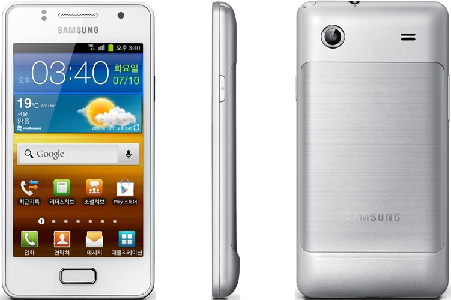

삼성 갤럭시 M 스타일
1. 외관

삼성전자가 2012년 1월에 출시한 안드로이드 스마트폰.
2. 사양
| 프로세서 | 퀄컴 스냅드래곤 S1 MSM7227A-1 SoC. ARM Cortex-A5 1 GHz CPU, 퀄컴 Adreno 200 GPU | ||
| 메모리 | 512 MB LPDDR1 SDRAM, 4 GB 내장 메모리, micro SDHC (최대 32 GB 지원) | ||
| 디스플레이 |
4.0인치 WVGA(480 x 800) RG-BG 펜타일 서브픽셀 방식의 SMD→삼성D Super AMOLED 멀티터치 지원 정전식 터치 스크린 |
||
| 네트워크 | 기본 | HSDPA & HSUPA & UMTS, GSM & EDGE | Wi-Fi 802.11a/b/g/n/ac, 블루투스 3.0 |
| CDMA | CDMA & EV-DO Rev. A | ||
| 카메라 | 전면 30만 화소, 후면 300만 화소 AF | ||
| 배터리 | Li-Ion 1650 mAh | ||
| 운영체제 | 안드로이드 2.3 (Gingerbread) | ||
| 규격 | 63 x 122.5 x 9.99 mm, 123.5 g | ||
3. 상세
처음부터 주머니 사정이 좋지않은 사람들을 위한 스마트폰으로 출시된 중급형 스마트폰이다.
2011년 2월에 삼성전자가 자체적으로 발표한 S-R-W-M-Y 라인업 중 M 라인업에 속하는 스마트폰이다.
전반적인 디자인은 갤럭시 S II와 비슷하게 생겼다. 또한, 디자인 자체는 무난한 편이라는 평을 받고있다.